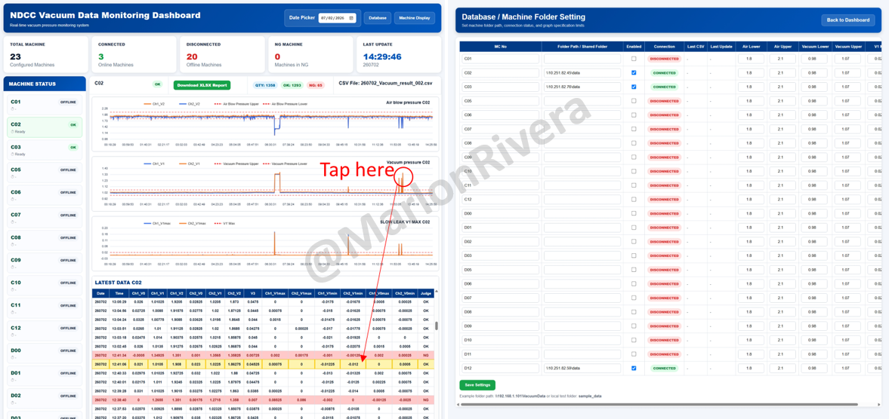

← Back to projects
Smart Factory • Cambodia / Thailand • 2025
Vacuum Monitoring & Predictive Maintenance System
Centralized web platform for real-time vacuum pressure, machine-health status, historical trends and alarm visibility.
PythonFastAPIJavaScriptSQLVacuum SensorsPredictive Maintenance

Responsibilities
System architecture, data collection, Python software, database, dashboards, alarms, historical analysis and deployment.
What needed to be solved
Manual observation made gradual degradation and historical fault investigation difficult.
Engineering approach
Built configurable real-time dashboards, alarm logging, historical records and centralized machine visibility.
Key outcomes
- Real-time monitoring
- Faster fault investigation
- Improved preventive maintenance
- Centralized records